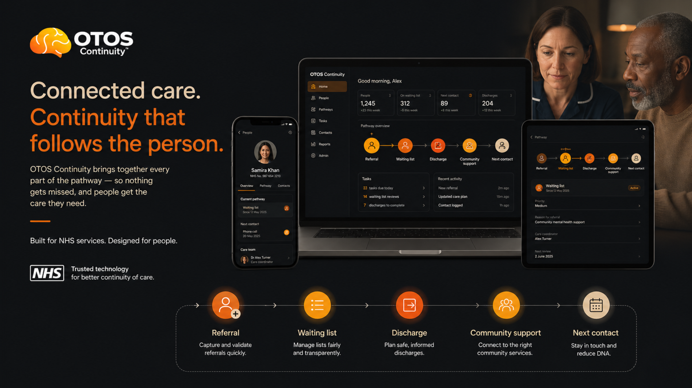
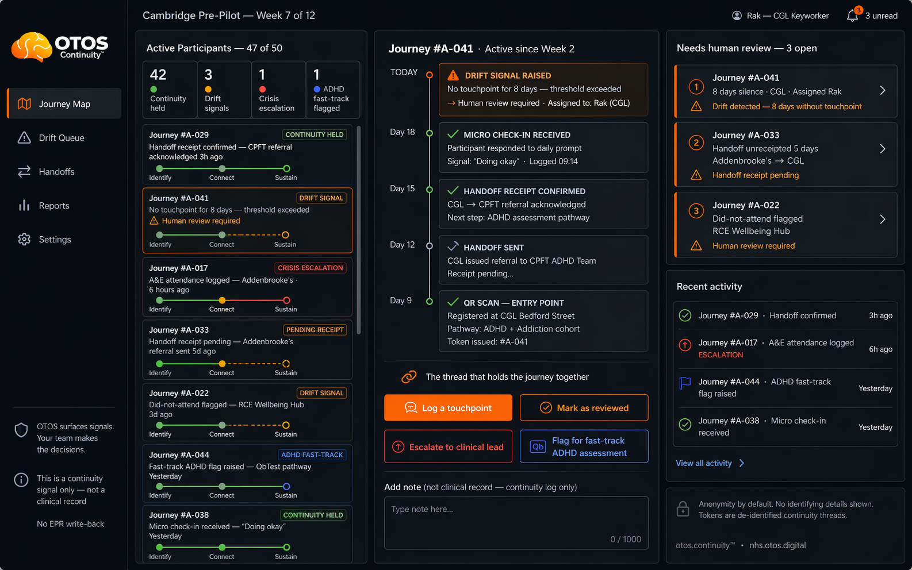
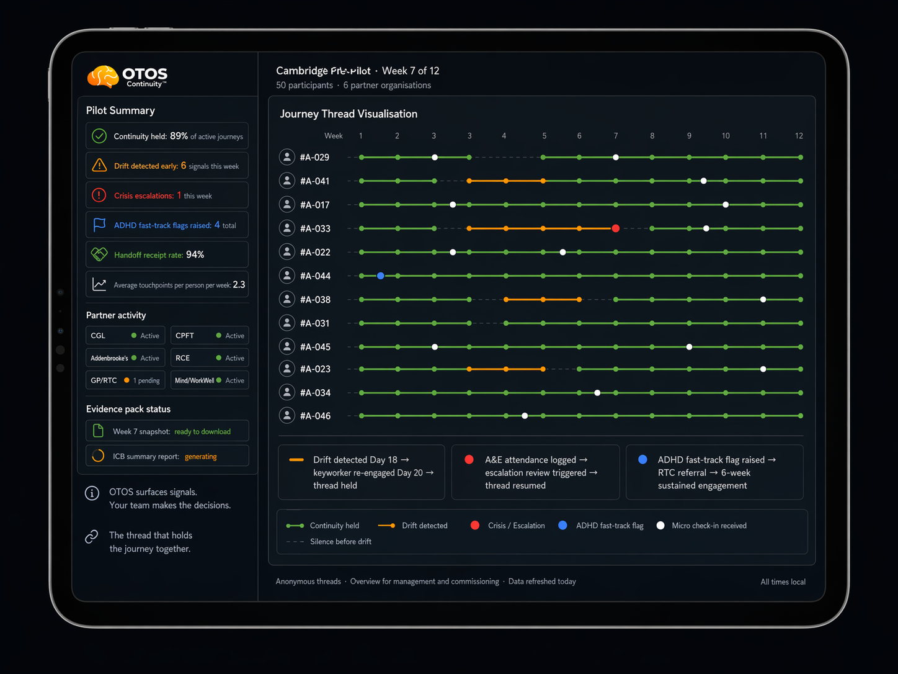
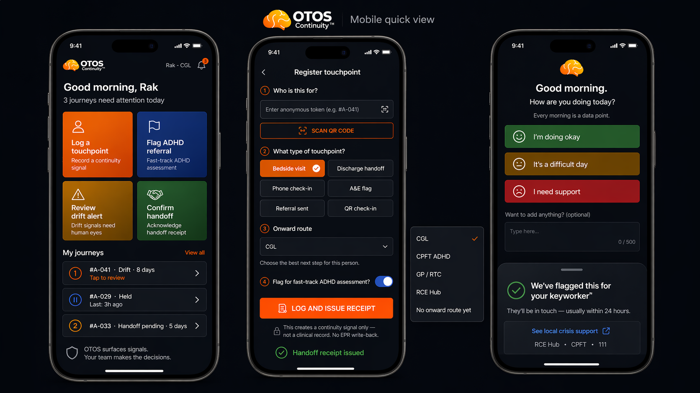
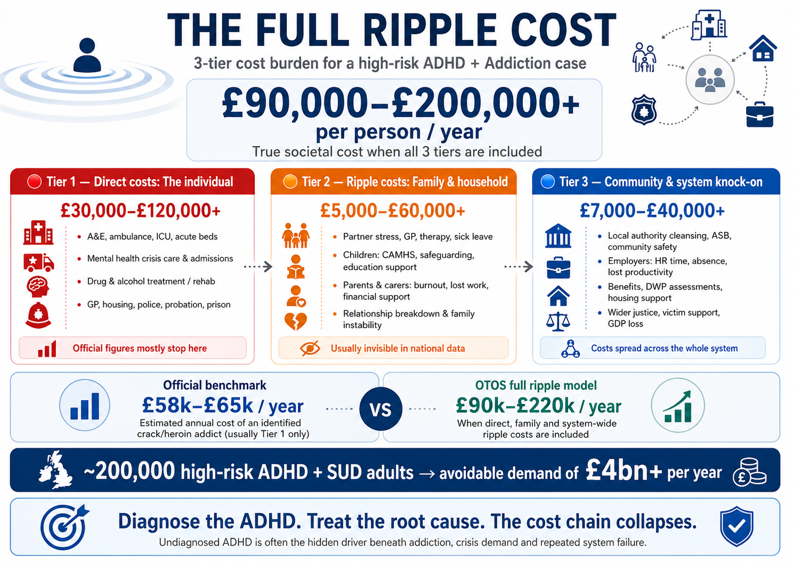

One person.
One continuous pathway.
These visuals show what OTOS Continuity™ is trying to make visible: the person, the pathway, the handoffs, the waiting points, the drift signals and the cost of letting the thread break.
The simple version.
One person stays visible.
These are the strongest general-purpose visuals for explaining OTOS quickly: one journey, one pathway, fewer gaps, better continuity.





The specific moment.
Bedside handoff, next step held.
This is the most specific visual for the story: a person is seen, the handoff is visible and the next step does not disappear after the room.


What partners could actually see.
No full clinical record needed.
Illustrative views only. The point is to show journey status, handoffs, drift and follow-through — not to replace EPRs, clinical notes or human judgement.






The scaffolding behind the idea.
Built to test, not overclaim.
These visuals explain the infrastructure, partner route and economic logic behind the 12-week pre-pilot demonstrator.


